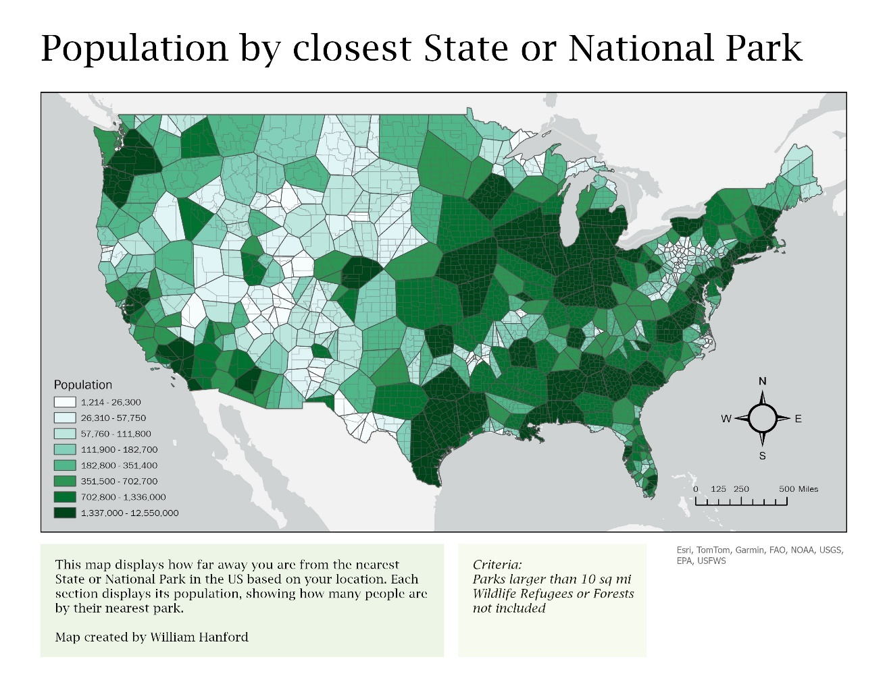

GIS Coursework / GIS II / National Park Access
National Park Access


Overview
Examined which parts of the U.S. have the best and worst access to national parks, then explored how adding more parks or normalizing by population would change that picture.
Process
Built Thiessen polygons around park locations to define “nearest park” service areas, then compared coverage before and after the addition of Gateway Arch National Park.